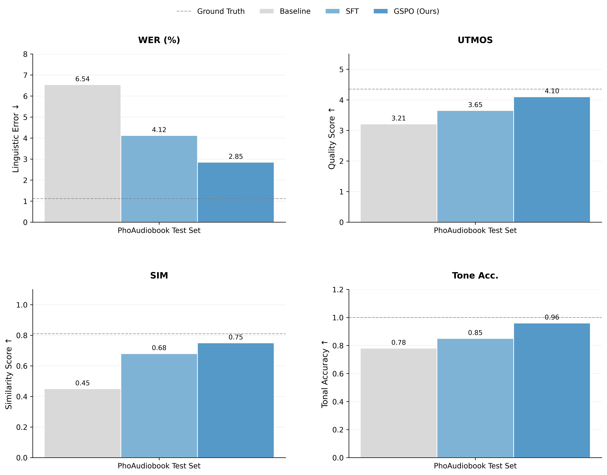
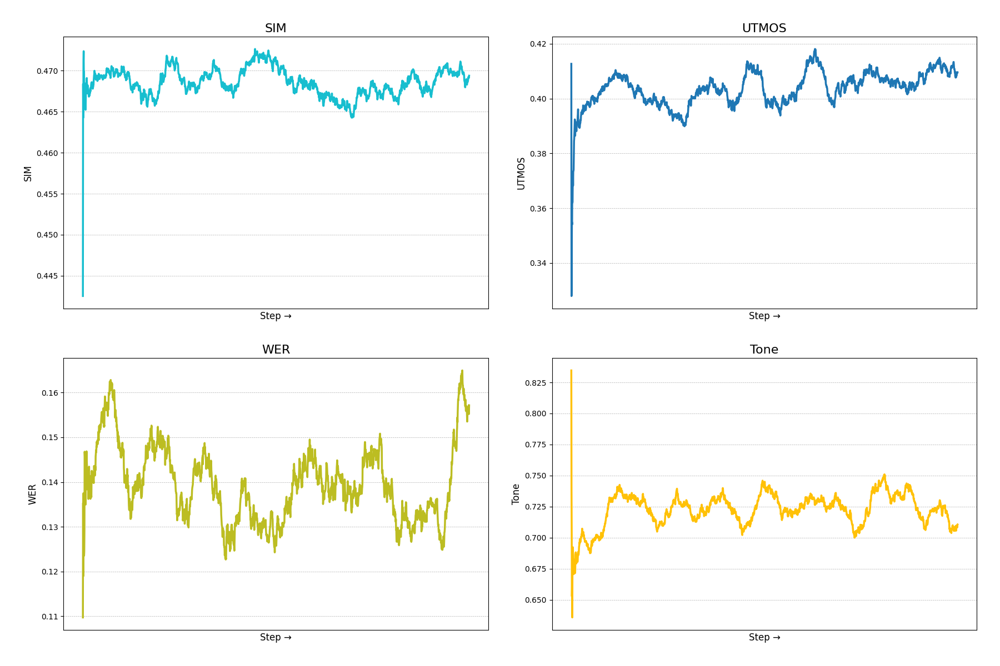
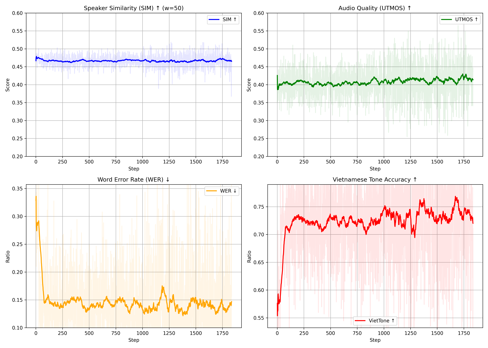
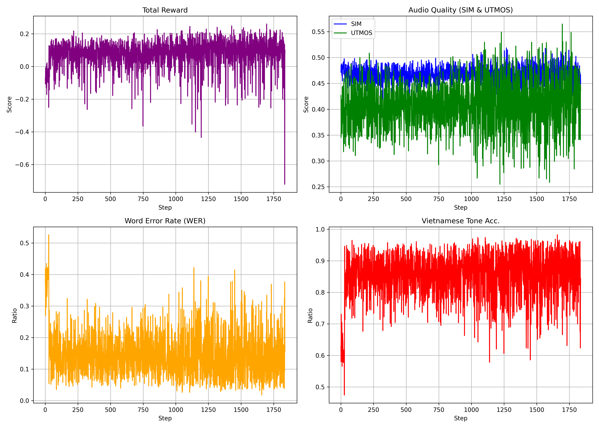

Fine-tuning Vi-SparkTTS-0.5B with Group Relative Policy Optimization (GSPO) using a multi-component reward function for improved naturalness, intelligibility, and speaker similarity.
GSPO · Reward Design · Training Pipeline
GSPO (Group Relative Policy Optimization) extends GRPO by computing per-group advantages across a batch of TTS completions. For each text prompt, the model generates N = 4 speech samples; a multi-metric reward signal is computed for each, and the policy is updated to maximize expected reward while staying close to the reference model via a KL-divergence penalty.
The backbone is Vi-SparkTTS-0.5B (LLM-based Vietnamese TTS), adapted with LoRA (r=16, α=32) and trained with TRL's GSPO trainer using 2×GPU distributed training.
ECAPA-TDNN + WavLM encoder cosine similarity
UTMOS22-Strong predicted MOS score
Whisper Large V3 ASR error rate (lower = better)
Unicode tone-mark comparison between reference and transcript
Evaluation on 2,250 held-out test samples
| Model | WER ↓ | UTMOS ↑ | SIM ↑ |
|---|---|---|---|
| Baseline SparkTTS | 0.0343 | 2.8407 | 0.6827 |
| SFT (supervised fine-tune) | 0.0497 | 2.9461 | 0.7765 |
| GSPO-2800 (ours) | 0.0363 | 2.8984 ▲+2% | 0.6823 |
* WER = Word Error Rate (Whisper Large V3), UTMOS = predicted MOS (UTMOS22-Strong), SIM = speaker cosine similarity (WavLM). SFT evaluated on checkpoint-3000; GSPO evaluated at step 2800.

Step-by-step reward components during GSPO training
| Step | SIM | UTMOS | WER | Tone | Total Reward |
|---|---|---|---|---|---|
| 400 | 0.4695 | 0.4302 | 0.0845 | 0.7728 | 0.1466 |
| 800 | 0.4627 | 0.3965 | 0.1099 | 0.7295 | 0.0968 |
| 1200 | 0.4734 | 0.5009 | 0.1093 | 0.8409 | 0.2092 |
| 1600 | 0.4587 | 0.4259 | 0.1003 | 0.8030 | 0.1365 |



6 test samples — same text, same reference speaker prompt, different model weights.
Reference speaker voice was used as a prompt for both models. GSPO was fine-tuned from the same SparkTTS backbone.
"Anh chị ở bình dương, sau bốn năm làm overtime anh ấy tậu con xe Honda Civic"
"Em gái học ở sài gòn, chỉ cần một năm làm part-time là em sắm laptop gaming xịn sò"
"Lục vân tiên quê ở huyện đông thành khôi ngô tuấn tú tài kiêm văn võ. Nghe tin triều đình mở khoa thi vân tiên từ giã thầy xuống núi đua tài."
"Dự án mới về AI Marketing được triển khai nhanh trên nền tảng tiktok để tối ưu hóa phễu chuyển đổi."
"À thì... thực ra mình cũng chưa chuẩn bị kỹ lắm, nhưng mà thôi, cứ thử xem sao nhỉ"
"Nắng chiều buông xuống nhuộm vàng cả cánh đồng lúa đang thì con gái gió thoảng qua mang theo hương vị nồng nàn của đất và vị ngọt của cỏ dại ven đường."
Reproduce the training pipeline
| Learning rate | 1.0e-6 |
| Batch size | 2 (grad accum ×4) |
| Num generations (N) | 4 |
| LoRA rank / alpha | r=16 / α=32 |
| LoRA dropout | 0.05 |
| Temperature | 0.8 |
| Top-p | 0.95 |
| Max epochs | 3 |
| Precision | BFloat16 |
| Training data | PhoAudiobook (5K) |
# 1. Install dependencies
pip install -r requirements.txt
# 2. Baseline evaluation (100 samples)
python scripts/run_baseline.py
# 3. Prepare TRL-format dataset
python scripts/prepare_data.py
# 4. Train GSPO (2× GPU)
accelerate launch \
--config_file configs/accelerate_config.yaml \
scripts/train_gspo_sparktts.py \
--config configs/config.yaml
# 5. Evaluate checkpoint
python scripts/eval_gspo_ckpt.py \
--checkpoint outputs/gspo_run_2000_steps/
# 6. Plot training rewards
python scripts/plot_rewards.py \
--log logs/gspo_rewards.csvIf you use this work, please cite:
@misc{gspo_sparktts_2025,
title = {GSPO for Vietnamese TTS Fine-tuning},
author = {Nguyen, ...},
year = {2025},
note = {Fine-tuning Vi-SparkTTS-0.5B with Group Relative Policy Optimization},
url = {https://github.com/...}
}